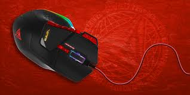

Catálogo de Mouse Gamer
Mouse RGB Pro
Alta precisión, sensor óptico 16000 DPI

Mouse G Wireless
Ligero, batería de larga duración

Mouse Ergonomix
Diseño ergonómico con iluminación RGB

Mouse MacroX
Botones programables para macros

Mouse Viper FPS
Sensor ultra rápido para shooters

Mouse Honey RGB
Diseño ligero tipo panal, RGB
Mouse Glider Pro
Deslizamiento suave, 7 botones programables
Mouse Titan MMO
12 botones laterales para juegos tipo MMO
Mouse TwinStrike
Ambidiestro, ideal para zurdos y diestros

Mouse Shadow RGB
Retroiluminado con efectos personalizables